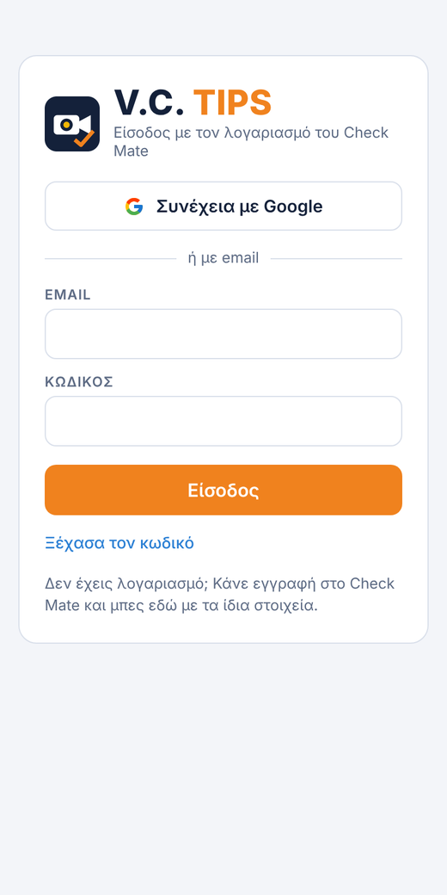
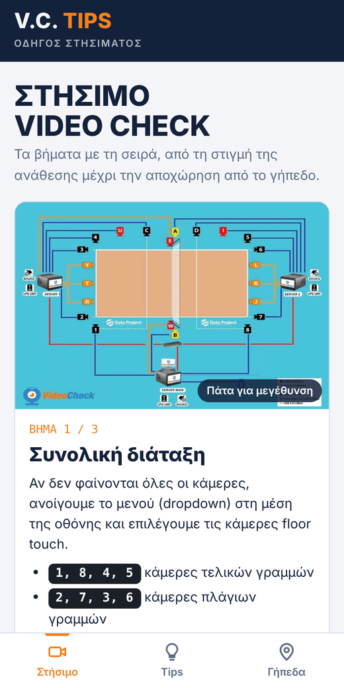
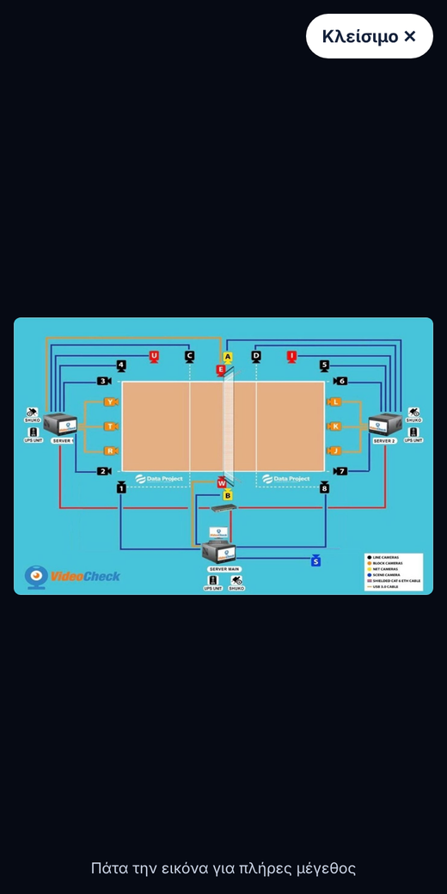
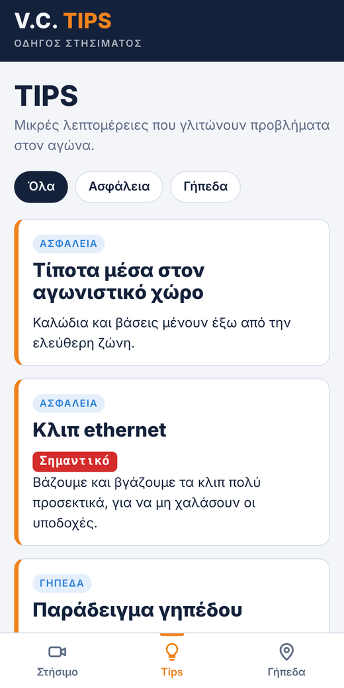
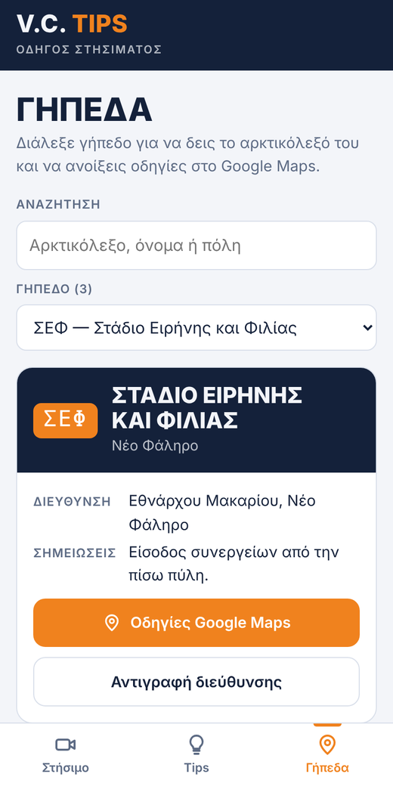
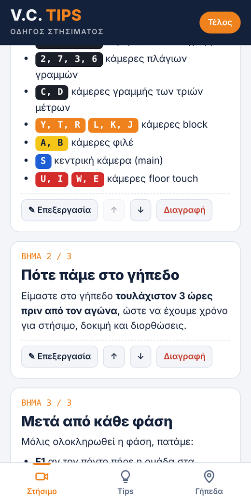
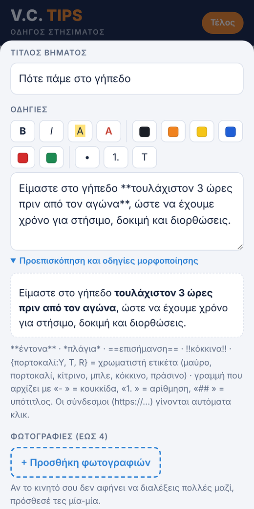
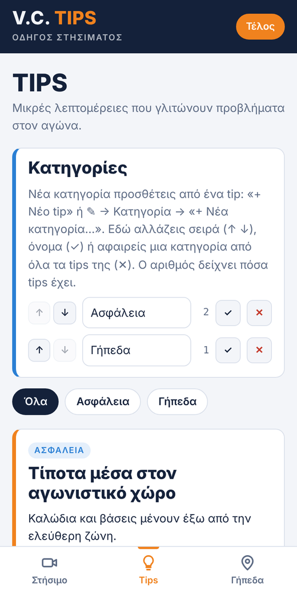

Το V.C. Tips είναι ο οδηγός στησίματος του Video Check: τα βήματα με τη σειρά, από τη στιγμή της ανάθεσης μέχρι την αποχώρηση από το γήπεδο, χρήσιμα tips και τα γήπεδα με οδηγίες Google Maps.
Σύνδεσμος: https://tsimpinosbv.github.io/vctips/
🔑 Μπαίνετε με τον ίδιο λογαριασμό που έχετε στο Check Mate. Η εφαρμογή δεν φτιάχνει νέο λογαριασμό και δεν αλλάζει τίποτα στο Check Mate.
Βήμα 1 · Είσοδος

- Πατήστε Συνέχεια με Google, ή γράψτε το email και τον κωδικό του Check Mate και πατήστε Είσοδος.
- Αν δεν θυμάστε τον κωδικό: Ξέχασα τον κωδικό → email → Αποστολή συνδέσμου.
- Δεν έχετε λογαριασμό; Κάντε πρώτα εγγραφή στο Check Mate.
Μένετε συνδεδεμένοι. Την επόμενη φορά η εφαρμογή ανοίγει κατευθείαν.
Βήμα 2 · Εγκατάσταση στο κινητό
- Android (Chrome): πατήστε 📲 Εγκατάσταση κάτω δεξιά, ή Chrome ⋮ → Εγκατάσταση εφαρμογής (ή «Προσθήκη στην αρχική οθόνη»).
- iPhone / iPad: ανοίξτε τον σύνδεσμο στο Safari → Κοινοποίηση (τετράγωνο με βέλος ↑) → Προσθήκη στην οικία → Προσθήκη. Από Chrome ή από τα μηνύματα δεν εμφανίζεται αυτή η επιλογή.
- Υπολογιστής: Chrome: εικονίδιο εγκατάστασης δεξιά στη γραμμή διευθύνσεων. Edge: ⋯ → Εφαρμογές → Εγκατάσταση αυτής της τοποθεσίας ως εφαρμογής.
Το V.C. Tips εγκαθίσταται χωριστά από το Check Mate και το Ημερολόγιο, με το δικό του σκούρο εικονίδιο.
Στήσιμο

Τα βήματα με τη σειρά, αριθμημένα (π.χ. «Βήμα 3 / 21»).
- Οι κάμερες έχουν το χρώμα της διάταξης, π.χ. 1, 8, 4, 5 ή Y, T, R.
- Σε κάποια βήματα η φωτογραφία είναι μεγάλη πάνω από τον τίτλο. Στα άλλα υπάρχουν μικρογραφίες κάτω από το κείμενο.
- Πατήστε οποιαδήποτε φωτογραφία για να ανοίξει σε πλήρη οθόνη.
Βήμα-βήμα
Στο Στήσιμο, πατήστε Βήμα-βήμα: κάθε βήμα εμφανίζεται μόνο του, σε όλη την οθόνη, με τη φωτογραφία μεγάλη.
- Επόμενο › και ‹ Προηγούμενο κάτω, εκεί που φτάνει ο αντίχειρας, ή σύρετε αριστερά-δεξιά.
- Πάνω φαίνεται σε ποιο βήμα είστε (π.χ. «Βήμα 5 / 21») και μια μπάρα προόδου.
- Αν κλείσετε στη μέση, την επόμενη φορά εμφανίζεται Συνέχεια από το βήμα …. Στο τελευταίο βήμα, το ✓ Τέλος ξεκινά από την αρχή την επόμενη φορά. Με το ↺ δίπλα στο «Συνέχεια» ξεκινάτε ξανά από το βήμα 1 όποτε θέλετε, π.χ. σε νέο αγώνα.
Η οθόνη δεν σβήνει όσο είστε στο Βήμα-βήμα, για να μη χρειάζεται να την ξυπνάτε με γεμάτα χέρια. Μόλις το κλείσετε, η οθόνη σβήνει κανονικά, σύμφωνα με τις ρυθμίσεις του κινητού. Σε παλιά κινητά ή εκδόσεις iOS που δεν το υποστηρίζουν, σβήνει κανονικά και μέσα στο Βήμα-βήμα.
Ο επόμενος αγώνας μου
Στην κορυφή του «Στήσιμο» φαίνεται ο επόμενος αγώνας σας από το Check Mate: ημέρα, ώρα, ομάδες και γήπεδο, π.χ. «σε 3 μέρες».
- Το γήπεδο ανοίγει κατευθείαν το γήπεδο του αγώνα, με αρκτικόλεξο, σημειώσεις και Google Maps.
- Και από το Check Mate: δίπλα στο γήπεδο κάθε ανάθεσης υπάρχει το κουμπί 🎥 Οδηγός γηπέδου, που ανοίγει το ίδιο γήπεδο εδώ.
- Η κάρτα φαίνεται μόνο αν ο λογαριασμός σας είναι συνδεδεμένος με το όνομά σας στο Check Mate.
Αναζήτηση και «Νέο»
- Ο μεγεθυντικός φακός πάνω δεξιά ανοίγει την αναζήτηση. Γράψτε μια λέξη (π.χ. «καλώδιο», «μπαταρία» ή αρκτικόλεξο γηπέδου) και βλέπετε όλα τα βήματα, tips και γήπεδα που την περιέχουν. Πατήστε ένα αποτέλεσμα για να πάτε εκεί.
- Ό,τι πρόσθεσε ή άλλαξε ο διαχειριστής από την τελευταία σας επίσκεψη έχει την ετικέτα Νέο. Μια πορτοκαλί τελεία στις καρτέλες κάτω δείχνει πού υπάρχουν νέα.
Φωτογραφίες σε πλήρη οθόνη

- Πατήστε την εικόνα για να τη δείτε στο πραγματικό της μέγεθος. Σύρετε για να δείτε λεπτομέρειες. Πατήστε ξανά για να επιστρέψει.
- Αν το βήμα έχει πολλές φωτογραφίες, σύρετε αριστερά-δεξιά ή πατήστε ‹ ›. Πάνω αριστερά φαίνεται σε ποια είστε (π.χ. «2 / 3»).
- Αν η φωτογραφία έχει λεζάντα (π.χ. «Κάμερα 1 – zoom 35%»), φαίνεται από κάτω.
- Κλείνει με Κλείσιμο ✕ ή πατώντας έξω από την εικόνα.
Tips

Μικρές λεπτομέρειες που γλιτώνουν προβλήματα, χωρισμένες σε κατηγορίες.
- Πατήστε μια κατηγορία πάνω από τα tips για να δείτε μόνο αυτήν. Όλα δείχνει όλα τα tips, ομαδοποιημένα.
- Το κόκκινο Σημαντικό ή τα κόκκινα γράμματα σημαίνουν προσοχή.
Γήπεδα

- Γράψτε στην αναζήτηση αρκτικόλεξο, όνομα ή πόλη, ή διαλέξτε από τη λίστα.
- Η κάρτα δείχνει το αρκτικόλεξο, το όνομα, τη διεύθυνση και, όπου έχουν συμπληρωθεί: θέση τραπεζιού, πρίζα / ρεύμα, στάθμευση, υπεύθυνο γηπέδου και σημειώσεις.
- Φωτογραφίες γηπέδου (έως 12), π.χ. πού μπαίνει το τραπέζι ή πού είναι η πρίζα. Πατήστε μία για πλήρη οθόνη.
- Οδηγίες Google Maps: ανοίγει τον χάρτη με διαδρομή μέχρι το γήπεδο.
- Αντιγραφή διεύθυνσης: για να την επικολλήσετε όπου θέλετε.
Χωρίς internet
Αν ανοίξετε την εφαρμογή μία φορά με internet, μετά λειτουργεί και χωρίς σήμα: ανοίγει κανονικά με ό,τι είχε φορτωθεί, και πάνω εμφανίζεται «Χωρίς σύνδεση». Το κουμπί Google Maps θέλει internet. Αν πατήσετε Αποσύνδεση, για να ξαναμπείτε θα χρειαστείτε σύνδεση.
Νέα έκδοση: ενημέρωση με ένα πάτημα
Όταν ανεβαίνει νέα έκδοση της εφαρμογής, εμφανίζεται πάνω στην οθόνη ένα πορτοκαλί κουμπί ⟳ Νέα έκδοση · πάτα εδώ. Πατήστε το και η εφαρμογή ενημερώνεται και ξανανοίγει μόνη της. Δεν χρειάζεται να την εγκαταστήσετε ξανά ούτε να σβήσετε κάτι. Αν δεν το πατήσετε, η ενημέρωση γίνεται έτσι κι αλλιώς την επόμενη φορά που θα ανοίξετε την εφαρμογή.
Για διαχειριστές · Επεξεργασία
Αλλαγές κάνουν μόνο οι διαχειριστές του Check Mate, με «Συνέχεια με Google». Στο κάτω μέρος κάθε σελίδας φαίνεται «Συνδεδεμένος: … · διαχειριστής».

Πατήστε ✎ Επεξεργασία πάνω δεξιά. Κάτω από κάθε βήμα, tip ή γήπεδο εμφανίζονται:
- ✎ Επεξεργασία: αλλαγή κειμένου και φωτογραφιών,
- ↑ ↓: σειρά (στα tips, μέσα στην κατηγορία τους),
- Διαγραφή: πατήστε δύο φορές για επιβεβαίωση.
Στο τέλος κάθε καρτέλας: + Νέο βήμα / tip / γήπεδο. Όταν τελειώσετε, πατήστε Τέλος.
Κείμενο, μορφοποίηση και φωτογραφίες

Πάνω από το κείμενο υπάρχει γραμμή μορφοποίησης. Μαρκάρετε λέξεις ή γραμμές και πατήστε:
- B έντονα, I πλάγια, κίτρινη επισήμανση, κόκκινα γράμματα,
- τα χρωματιστά τετράγωνα για ετικέτα στο χρώμα της κάμερας,
- • κουκκίδες, 1. αρίθμηση, Τ υπότιτλο.
Πατήστε Προεπισκόπηση για να δείτε πώς θα εμφανιστεί.
Φωτογραφίες: έως 12 σε κάθε βήμα ή tip, με + Προσθήκη φωτογραφιών (μπορείτε να διαλέξετε πολλές μαζί). Κάτω από κάθε φωτογραφία υπάρχει πεδίο Λεζάντα, π.χ. «Κάμερα 1 – πλάγια, zoom 35%»: φαίνεται κάτω από τη φωτογραφία και στην πλήρη οθόνη, και βρίσκεται με την αναζήτηση. Με πολλές φωτογραφίες η αποθήκευση δείχνει «Ανέβασμα φωτογραφιών 3/8…» μέχρι να τελειώσει. ‹ αλλάζει τη σειρά, ✕ αφαιρεί. Τσεκάρετε «Η πρώτη φωτογραφία ανοιχτή σε μεγάλο μέγεθος» για να εμφανίζεται μεγάλη, όπως στο βήμα 1.
Κατηγορίες tips και γήπεδα

- Νέα κατηγορία: σε ένα tip, Κατηγορία → + Νέα κατηγορία… και γράψτε το όνομα.
- Στο κουτί Κατηγορίες (καρτέλα Tips, με ✎ ανοιχτό): ↑ ↓ σειρά, ✓ νέο όνομα, ✕ αφαίρεση (τα tips μένουν χωρίς κατηγορία).
- Στοιχεία γηπέδου: στο ✎ ενός γηπέδου συμπληρώνετε, αν θέλετε, Θέση τραπεζιού VC, Πρίζα / ρεύμα, Στάθμευση, Υπεύθυνο γηπέδου και έως 12 φωτογραφίες με λεζάντα, όπως στα βήματα. Τα κενά πεδία δεν εμφανίζονται.
- Γήπεδα: + Νέο γήπεδο, ή Εισαγωγή λίστας γηπέδων με μία γραμμή ανά γήπεδο: Αρκτικόλεξο ; Όνομα ; Πόλη ; Διεύθυνση (ή στήλες από Excel).
- Αντιγραφή όλων των κειμένων (στο τέλος της σελίδας): όλα τα βήματα, tips και σημειώσεις σε απλό κείμενο, π.χ. για έλεγχο.
Οι εφαρμογές μας
Τρεις ξεχωριστές εφαρμογές, με τον ίδιο λογαριασμό. Κάθε μία εγκαθίσταται χωριστά, με το δικό της εικονίδιο.
 ΗμερολόγιοΤο προσωπικό σας αρχείο αγώνων και πληρωμών.tsimpinosbv.github.io/checkmate/imerologio.htmlV.C. TipsΟδηγός στησίματος, tips και γήπεδα.tsimpinosbv.github.io/vctips/
ΗμερολόγιοΤο προσωπικό σας αρχείο αγώνων και πληρωμών.tsimpinosbv.github.io/checkmate/imerologio.htmlV.C. TipsΟδηγός στησίματος, tips και γήπεδα.tsimpinosbv.github.io/vctips/Όλες μαζί, σε μία σελίδα: Check Mate Suite · tsimpinosbv.github.io
Όταν στέλνετε έναν από αυτούς τους συνδέσμους σε Viber, WhatsApp ή email, εμφανίζεται κάρτα με το εικονίδιο και το όνομα της εφαρμογής.
Συχνά προβλήματα
| Πρόβλημα | Τι κάνω |
|---|---|
| «Δεν υπάρχει πρόσβαση στο περιεχόμενο» | Ελέγξτε ότι μπήκατε με τον λογαριασμό του Check Mate. Αν συνεχίζει, ενημερώστε τον διαχειριστή. |
| Δεν βλέπω τις τελευταίες αλλαγές | Κλείστε την εφαρμογή τελείως και ανοίξτε τη ξανά, με internet. |
| Στο iPhone δεν βρίσκω «Προσθήκη στην οικία» | Ανοίξτε τον σύνδεσμο στο Safari, όχι σε Chrome ή μέσα από Viber. |
| Είμαι διαχειριστής αλλά δεν βλέπω ✎ | Αποσύνδεση και ξανά είσοδος με Συνέχεια με Google. |
| Θέλω να βγω | Κουμπί Αποσύνδεση στο κάτω μέρος της σελίδας, δίπλα στο «Σχετικά». |
| Οτιδήποτε άλλο | Τηλεφωνήστε στον κ. Νικόλα Παπαχατζή ή στον κ. Μιχάλη Τσιντομηνά. |
Οι εικόνες είναι παραδείγματα.